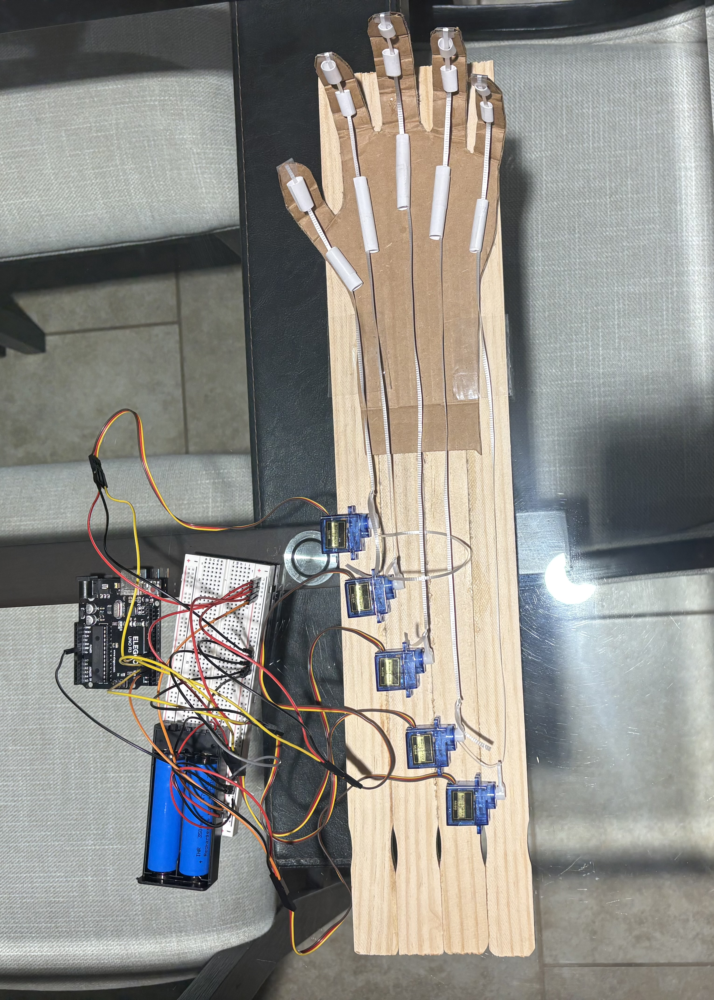
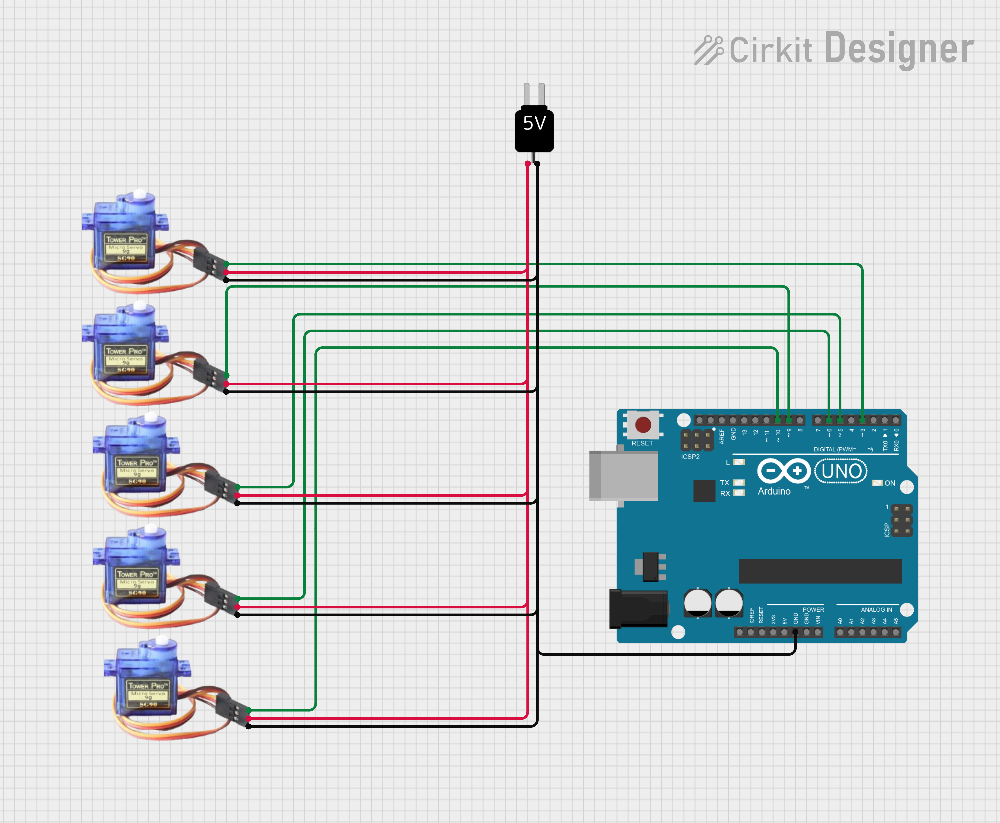

From the schematic above, the servos are all powered from an external source rather than directly from the Arduino pins. This is because each ATmega328P output pin can supply a maximum of 40mA, while each servo draws between 170–290mA under load — far exceeding what the microcontroller can safely provide.
For the external supply, I used two 18650 lithium-ion batteries. I initially planned to wire them in series for a combined 7.4V output and use a 5V buck converter to step the voltage down. However, due to the current charge levels of the batteries — one measuring 4V and the other 1.3V — the combined voltage was approximately 5.3V, which is within the acceptable operating range for the SG90 servos. This made the buck converter unnecessary, simplifying the circuit.
The coding was arguably the most difficult part of this project. Figuring out how Python should communicate with the Arduino via USB, and how to implement a hand tracking system, were both significant challenges. I used MediaPipe — Google's hand tracking library — to track finger movements in real time. Once finger orientations were identified, I implemented a function to calculate the bend angle of each finger using the dot product formula to find the angle between two vectors: one pointing from the middle joint to the fingertip, and the other from the middle joint to the knuckle. These angles were then sent via USB to the Arduino script.
The hardest challenge came during debugging after the code was complete. Once I ran the Python script, the SG90 servos would track my fingers on the first iteration and then completely stop. The issue was that Python was sending messages faster than the Arduino could process them. By the time the first message was read and sent to the servo motors, there were already 3–4 new messages waiting in the USB buffer. The fix was to discard all but the most recent message on the Arduino side, ensuring the servos always respond to the latest finger position rather than freezing while trying to catch up with a backlog of stale commands.